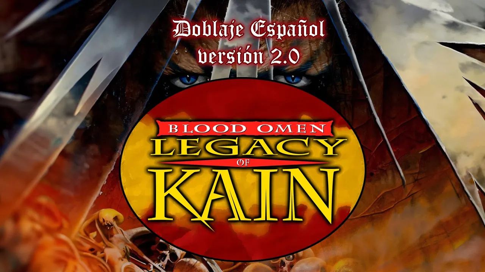
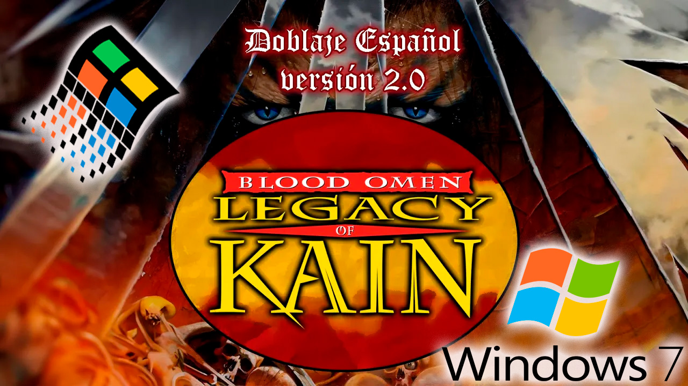
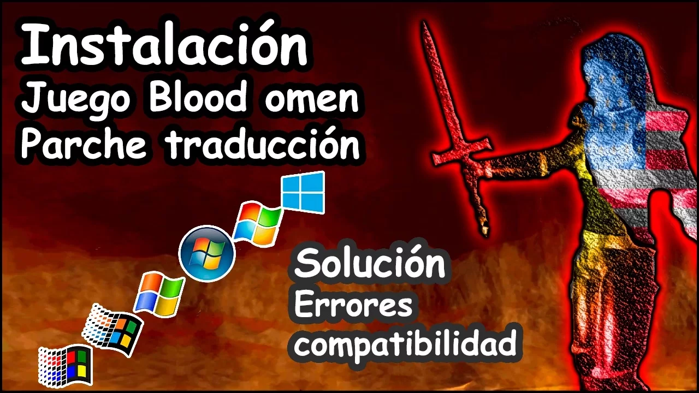

Descarga Blood Omen en Español

V2: Nueva versión del doblaje en castellano. En esta nueva versión podrás disfrutar de un doblaje con nuevas voces totalmente profesionales.
Versión para Windows 8 y superiores
Descargar
V2W7: Nueva versión del doblaje en castellano. En esta nueva versión podrás disfrutar de un doblaje con nuevas voces totalmente profesionales. Esta versión es para equipos viejos que no pueden ejecutar la versión estándar del parche.
Versión para Windows 7 y anteriores
Descargar
V1: Primera versión del doblaje en castellano. Este fue el primer doblaje que salió. Es un doblaje para nostálgicos. Si le tienes cariño a las voces originales del primer doblaje que lanzamos, esta es tu versión. Algunas de las voces son amateurs, pero le guardamos un cariño especial a esta versión.
Versión Antigua
DescargarTutoriales de instalación
Tutorial de instalación de la versión nueva
Tutorial de instalación de la versión antigua
NOTA: En caso de no poder instalar la versión nueva, siempre se recomienda ver el tutorial para la versión antigua porque se habla de cuestiones de compatibilidad que pueden ser de utilidad en ambas versiones.